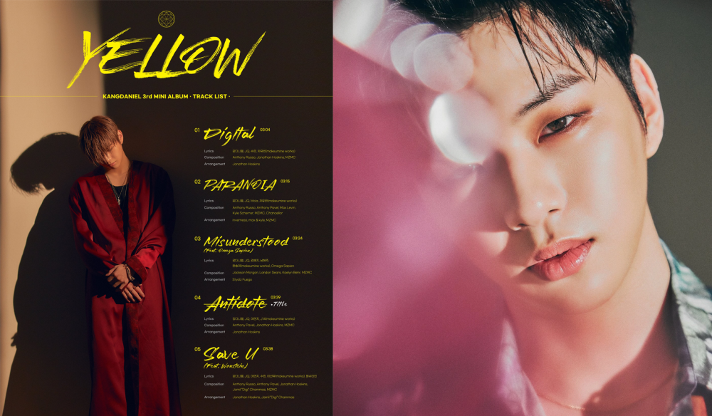

Kang Daniel is back! His new mini album, "Yellow" is released on April 13th, 2021.
The bright smiles usually hide the greatest pain. Nothing had seemed amiss before Kang Daniel announced his hiatus from the entertainment industry back in December 2019, citing “health problems” – but little did anyone know that he had been diagnosed with depression and panic disorder in the first half of that year.
A year after returning to the limelight in March 2020, the solo artist and former Wanna One member revisits that dark period of his life through ‘Yellow’. It’s the third and final part of his ‘Color’ trilogy. An attempt to find “his true colours as an artist”, the project started in March last year with ‘Cyan’ followed by ‘Magenta’ in August 2020.